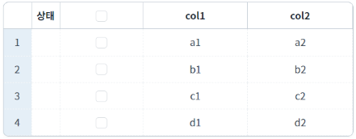
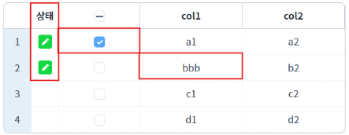
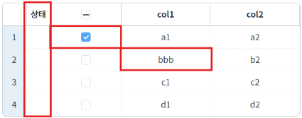
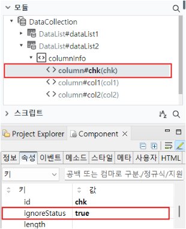

DataList의 컬럼 속성 'ignoreStatus'를 사용하여 컬럼 데이터를 변경해도 상태 값이 변경되지 않도록 설정한 예제입니다.
ignoreStatus: (default: false, true) 데이터가 변경되었을 때 상태 값을 바꾸지 않을지 여부
DataList는 행(Row)마다 삽입, 수정, 삭제 등의 상태값(RowStatus)을 가지고 있습니다.
상태값은 행의 'rowStatus' 키에 할당되며 문자형 코드로 할당됩니다.
다음 목록은 상태값에 따른 문자형 코드값과 숫자형 코드값입니다.
- status : R / statusValue : 0 - 초기 상태. (변화없음)
- status : U / statusValue : 1 - 갱신. (수정)
- status : C / statusValue : 2 - 삽입. (insert API 호출 시)
- status : D / statusValue : 3 - 삭제. (delete API 호출 시)
- status : V / statusValue : 4 - 삽입 후 삭제. (insert 후 delete 호출 시)
- status : E / statusValue : 5 - 제거. (remove API 호출 시)
'ignoreStatus' 속성 설정하기
1
STEP 1: 초기 상태 확인하기
예제 영역 'ignoreStatus = false'에서 확인합니다.
GridView에서 초기 데이터를 확인합니다.
상태 값이 'R'(초기 상태) 입니다.Image 1.브라우저(Chrome) 실행 예시

2
STEP 2: 셀을 클릭하여 컬럼 값을 수정합니다.
첫 번째 행과 두 번째 행의 데이터를 수정하였습니다.
Image 2.브라우저(Chrome) 실행 예시

상태 값이 'U'(수정 상태)로 변경됩니다.
1
STEP 1: 초기 상태 확인하기
예제 영역 'ignoreStatus = true'에서 확인합니다.
GridView에서 초기 데이터를 확인합니다.
상태 값이 'R'(초기 상태) 입니다.Image 3.브라우저(Chrome) 실행 예시
2
STEP 2: 셀을 클릭하여 컬럼 값을 수정합니다.
첫 번째 행과 두 번째 행의 데이터를 수정하였습니다.
Image 4.브라우저(Chrome) 실행 예시

데이터를 수정해도 상태 값이 바뀌지 않습니다.
[필수] ignoreStatus
DataList Column 속성을 적용할 때는 '모듈' 바에서 속성을 적용할 컬럼을 선택한 후, 속성 탭에서 확인합니다.
본 예제에서는 dataList2의 모든 컬럼을 'ignoreStatus = true'로 적용하였습니다.
Image 5.웹스퀘어 스튜디오의 Component View - 속성 설정 예시

[column] ignoreStatus